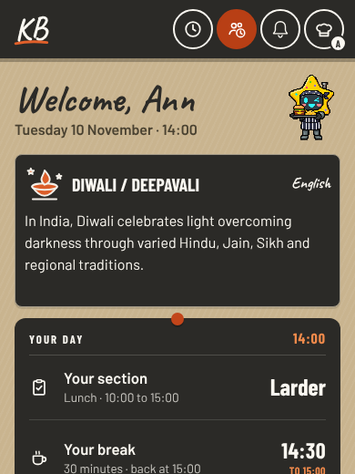
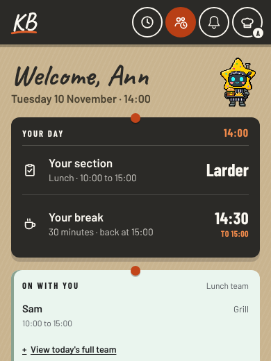
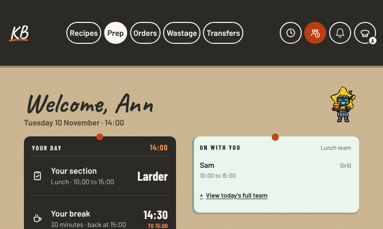
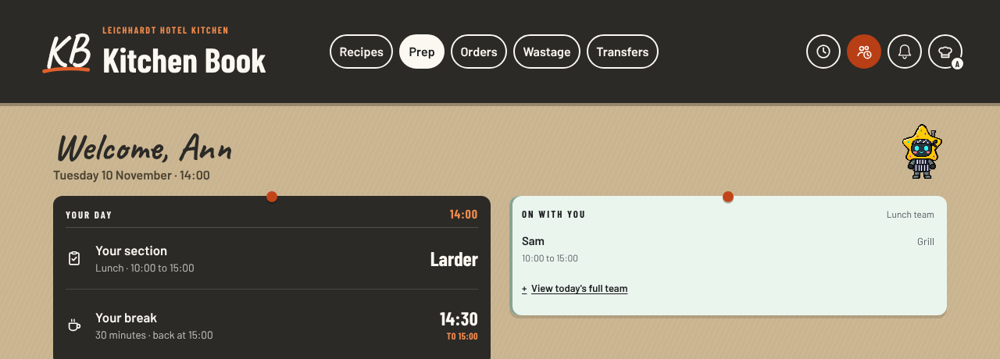

Mascot: a shuffled action each day
Preview, 9 November 2026. Real Home page with synthetic staff and the test stand-in for Firebase. Nothing in the live book has changed. Brief and council.
Each signed-in person gets one action a day from their own shuffled set of all 11. Nothing repeats until all 11 have played. The three designs differ in what starts the action, what stays on screen afterwards and whether you can tap it.
A: plays by itself, settles on Welcome
First Home view of the day: today's action plays once. Then the neutral Welcome pose stays. No tap, no words.


B: plays by itself, keeps today's pose, tap to replay
First Home view of the day: today's action plays once, then its own pose stays. Tap the mascot to see it again.

C: waits for a tap
Nothing moves by itself. The Idle pose waits; a tap plays today's action. A day without a tap does not use up an action.
Two rounds for one person
A test order for "Ann" from the shuffle (pinned seed). Each round of 11 has every action once; no action shows two days running.
Other widths

